El juez de la Audiencia Nacional Baltasar Garzón ordenó ayer el procesamiento de 31 miembros de Ekin , el supuesto aparato político de ETA , por los delitos de pertenencia o colaboración con banda armada.
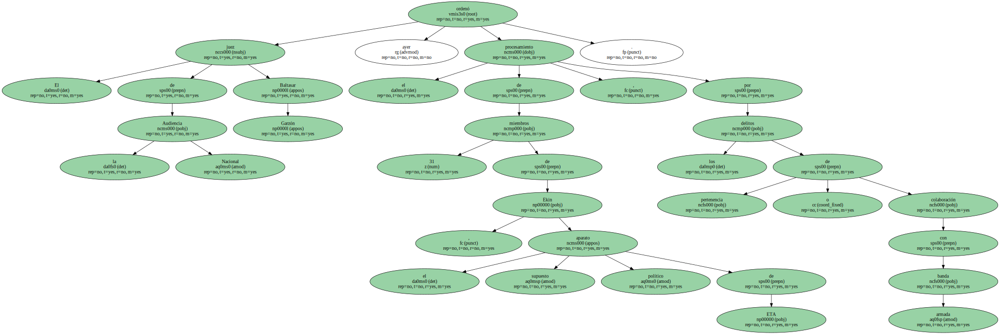En el auto , Garzón exhorta además al Tribunal Superior de Justicia de Euskadi a que emprenda acciones contra los parlamentarios vascos José Antonio Urrutikoetxea , Josu Ternera , a quien considera el máximo cargo de Ekin en el interior de España , y Jon Salaberria , al que señala como responsable de la organización en Guipúzcoa.
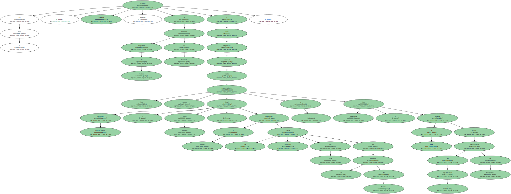Al estar ambos aforados , corresponde actuar a ese tribunal.
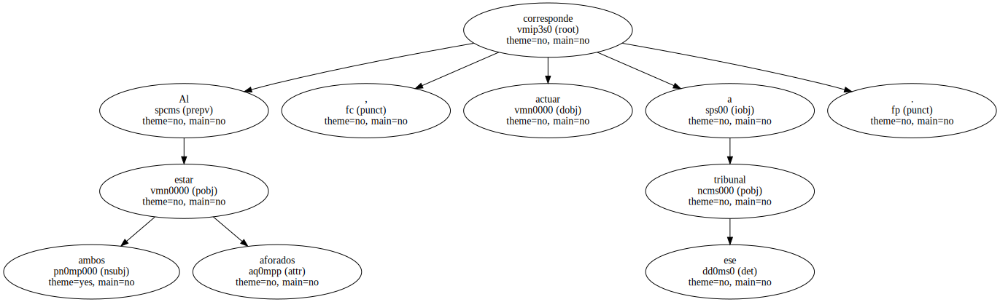En la lista de procesados figuran los abogados de Gestoras pro Amnistía José María Matanzas , como presunto coordinador de los presos etarras , y Natale Landa.
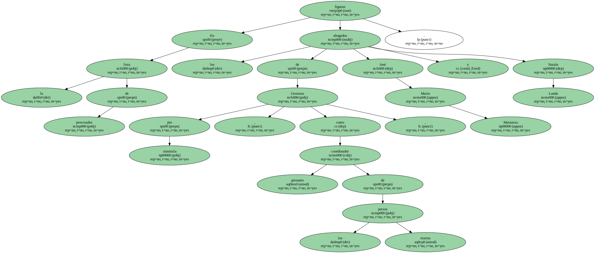También se encuentran el ex portavoz de KAS Xabier Alegria y la ex portavoz de Jarrai Ana Lizarralde.
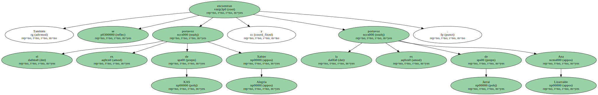Garzón confirmó la situación de prisión para Lizarralde y los otros cinco procesados que ya se hallan en la cárcel , así como para Carlos Iñigo Blasco , al que declaró en rebeldía por hallarse huido.
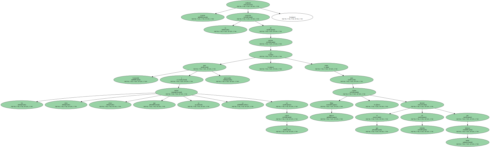A los restantes les mantuvo su condición de libertad provisional.
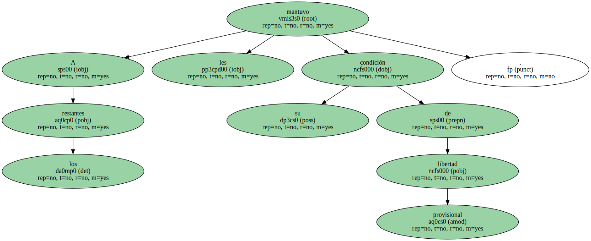De las 33 personas para las que el Ministerio Fiscal solicitó el procesamiento , el juez decidió excluir " de momento y a pesar de los indicios existentes " a Alberto Frias y Mario Zubiaga , hasta que les tome declaración el próximo 29 de agosto.
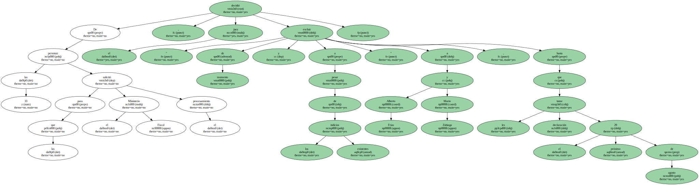Los dos días previos interrogará al conjunto de los procesados.

Para argumentar la actividad delictiva de los acusados , Garzón invocó un auto que él mismo dictó el pasado 4 de abril y en el que declara la ilicitud de Ekin.
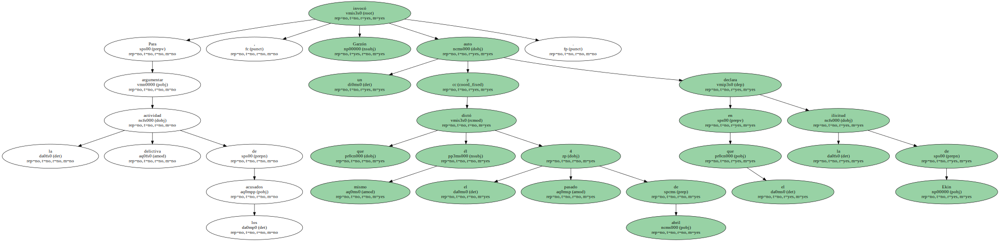En dicho escrito , el juez sostiene que Ekin es " sin ningún género de dudas " la sucesora de KAS , que funcionó como aparato político de la banda hasta su ilegalización , en noviembre de 1998.
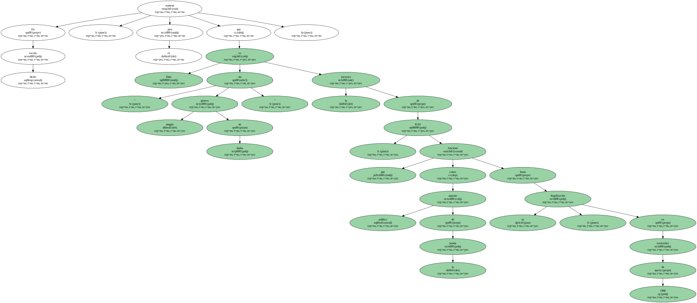En el auto de procesamiento , de 321 páginas , Garzón ilustra con numerosos ejemplos los métodos de Ekin.
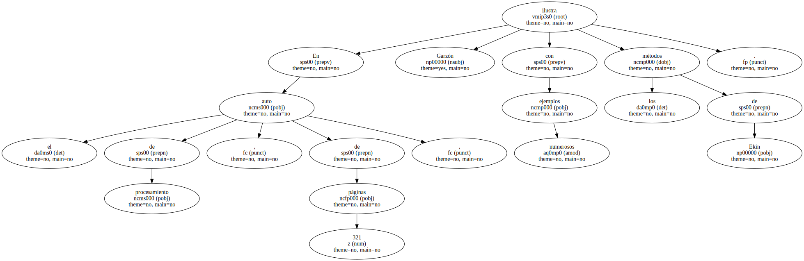Matanzas afirma que se aprovechó de su condición de abogado para dar instrucciones a los presos de ETA.
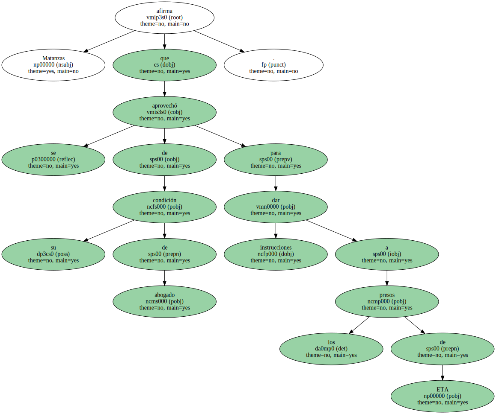En concreto , cuenta que se presentó ante un recluso como " comisario político " y le advirtió de que , en caso de solicitar la libertad condicional , quedaría " automáticamente expulsado " del Movimiento de Liberación Nacional Vasco.
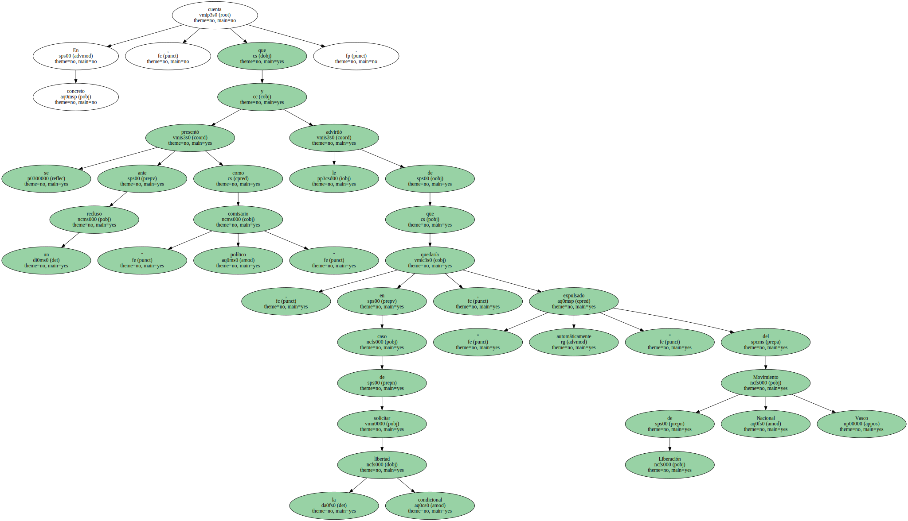Josu Ternera cita su historial de activista etarra desde 1973 y lo presenta como un asiduo a las reuniones de Ekin y Jarrai , haciendo prevaler su condición de aforado.
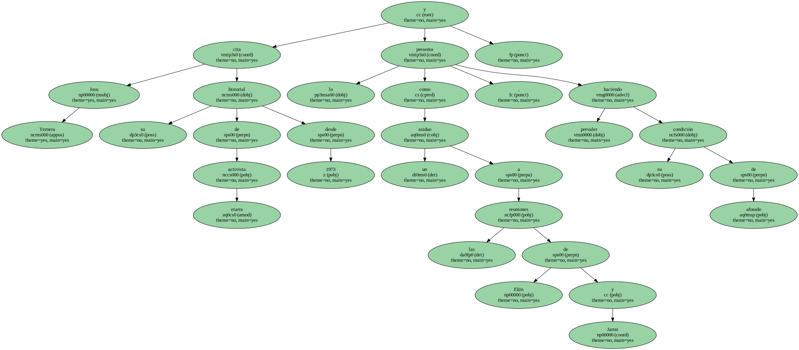